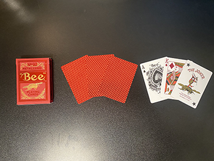

I appreciated that this was a quick/easy read. As someone with a very short attention span, the visuals were really helpful, especially the diagram that explained the different reach-areas of devices. I was also happy that the author mentioned dark-UX and I’d enjoy reading other articles about this topic (out of curiosity but also to make sure I’m not accidentally tricking my users).
I’m definitely a beginner when it comes to UI, so I’m always grateful to learn how to build intuitive design or guide users into certain actions. I realized the ways that I’ve used sliders in the past were not as intuitive as they could have been (oops). I also took note of making the x button into a ‘close’ button, and this helped me reflect on my habits as well because there have been many times where I’ve hit the ‘x’ button so fast for something and then later realized the pop-up was actually important.
Questioning
This article also made me consider what it would be like to design mobile games and I’m interested in learning more. But in all honesty, the section about designing ad pop-ups and purchase buttons felt crazy dystopian and I would absolutely hate to have to do that. To me, it just feels really unmotivating to think of ways to ‘encourage’ users to hit these types of buttons.
Mobile Attention Spans
Overall, this article led me into a mini rabbit-hole of comparing my patience for older video games versus mobile games. For example, the part about having short video game intros is funny to me because especially with older games, I absolutely love watching the (sometimes unnecessary) 4-5 minute intros.
It creates so much hype and worldbuilding for the game that it just feels easy to sit through the whole thing painlessly. But, with apps/mobile games, I get frustrated at intros sometimes and will hit the skip button instantly. I guess my attention span just shrinks whenever I’m on my phone.
Every Picture
Part One
Alyssa Cosner 2024, picture of Charlotte
This image is interesting because the figure is 1. Fuzzy and 2. Pretty detailed. From just the flat image, you’re missing the back and the sides of the figures, so I’m interested in exploring ways to show these hidden parts (ex: having the figure rotate or including detail shots). I plan to have the user select one of the trinkets they’re interested in, and then a bigger window will appear with details about the trinket, as well as a spinning gif to show off the dimensions of the figure.
Collection
My collection/archive is of my favorite trinkets, so Charlotte (the name of the figure in the image) fits into this. Compared to some of my calmer trinkets, she is a little bratty and definitely has an attitude. Showing my collection is meant to show the user how I personally view my trinkets– since I tend to give them personalities and would like to introduce them this way to everyone.
Adding Personality
Some details I may include to help personalize them include: favorite food, favorite song, mbti/personality summary, and a story about how I adopted/befriended them. I want users to walk away from my website thinking about their personal connection to their items and how sentimental/connected they feel to their belongings.
Part Two

I’m reviewing Josh Gerdhart’s images. All of his images show some of his different card collections, including the box, the back of some of the cards, and the front of a few as well.
Interesting Aspects
The most interesting aspects of the cards are how each one has its own colors and characters, and there are clear design choices chosen by the cards’ designers. I found myself wondering more about how cards are made and I found that concept really interesting
Obvious vs. Mysterious
The most obvious part is that these are really cool and cohesive card decks. CSS animation wise, there are really cool perspective-based card animations that he could try out with these cards. The most mysterious part is all of the questions I have about the cards.
For example: Where did these cards come from? What is his relationship with the cards? Why is he collecting cards? Does he play card games with these/if so, what are his favorite card games. What is the history of card design? Etc. When I talked with Josh about this, he mentioned that he finds the flexibility of designing within the same format to be really intriguing.
I found this article to be a bit humorous, since my attention span is extremely short and I tend to skim (to an extreme level) when it comes to reading.
User Experience
On that same note, I found myself following along with the exercises listed in the article (‘what’s going on in this picture?’ etc.) so I would say this was definitely an effective read. Thinking through these questions is really important because oftentimes, I’ll just throw relevant images into my work.
But, because I personally know the relationship between the image and my topic (and am biased because I know what’s going on), I don’t really stop to think about how viewers may understand and pick apart the image.
It seems that this is a great empathy-building exercise.Reading their responses from a user-centered view is really interesting because it gives insight into understanding how people empathize with others (through pictures, in this case). It's important to think about how a user forming a connection with imagery can add to effective storytelling methods.
This website is super simple and so effective. They quickly catch your attention with their website's title, "soon" in motion graphics. As it's the only thing to appear initially, it also creates suspense and makes you feel like you'll see something great "soon".
Since they're a production company, their cinematic experiences are their greatest asset. The entire background of the website shows off their productions (like it literally plays a nonstop video); so even if you aren't as actively reading the information on the screen, the quality of their work alone is enough to get your attention. The other interactions with the site remain simple to highlight how strong the background of the website is, and the site's hierarchy is very straightforward.
This article was really informative for me since I’m planning to use an overlay for my Madlib studio project. This is a summary and response to best practices outlined in the article.The anatomy of a modal window is essential for making sure your users don’t feel trapped or overwhelmed.
They should include a title, an x/cancel button, button labels, small enough size (so it’s not covering too much of the page under it), as well as a shadow behind everything. I also took note that the close buttons should be specific. In my case, this could be something like 1. Retry (get new recipe) 2. Download recipe.
Accessibility
I don’t regularly use keyboard shortcuts, so I’m happy this article covered common ways for users to exit modal windows using keys. For example, I should code this window so that they can leave by hitting the ‘Esc’ key. Modal Windows also function by trapping the user inside of the window until the dialog is complete, so I should keep this in mind and begin researching how to implement this with JavaScript.
Mobile
I’m still debating on whether or not to make my Madlib project responsive, because if I were to use a modal window though, it wouldn’t transfer onto my phone well. With all of these factors considered, I may have the recipe generated onto its own page rather than having it pop up as a modal window. I don’t want to create usability issues for users and planned to give the pop-up a fake paper-like effect, so it’d probably be more effective to style it on a normal page.
I found this article very helpful and easy to follow, especially since I deal with a lot of dental forms for my job, so I definitely feel familiar with overwhelming form design.
With this, I’ll keep in mind that forms should have minimal inputs and the goal is to have the least amount of objects on the screen possible. This is important for me since I tend to ask a lot of very detailed questions and will certainly need to keep this in check for my MadLib project.
Madlib Revisions
I’ve received lots of inspiration from this article for my project, specifically with the ‘one column layout’ rule (since my comp currently has 2 columns), and the efficiency of having a timeline that shows user’s progress in filling out the form. Since my madlib project might need multiple screens of input, I plan to use this technique.
Labels
It’s good practice to keep labels close to the input fields. My Madlib comp currently has tags inside of the input fields, which after reading this article, I plan to change since there are some usability concerns with it (ex: not being able to see the label once you start typing).
On this note, I would also like to allow users to use the tab button to improve usability. My current submit button is literally just “submit”, so I plan to change it to “get recipe” or something along those lines. I’d also like to learn how to disable the submit button after one use and explore options for form feedback.
Example
Pinterest shows good form design because the first input field has a colored border on it to draw your attention to it. Additionally, there are very few objects on the screen and the password section has a 'view password' button rather than a double confirmation field.